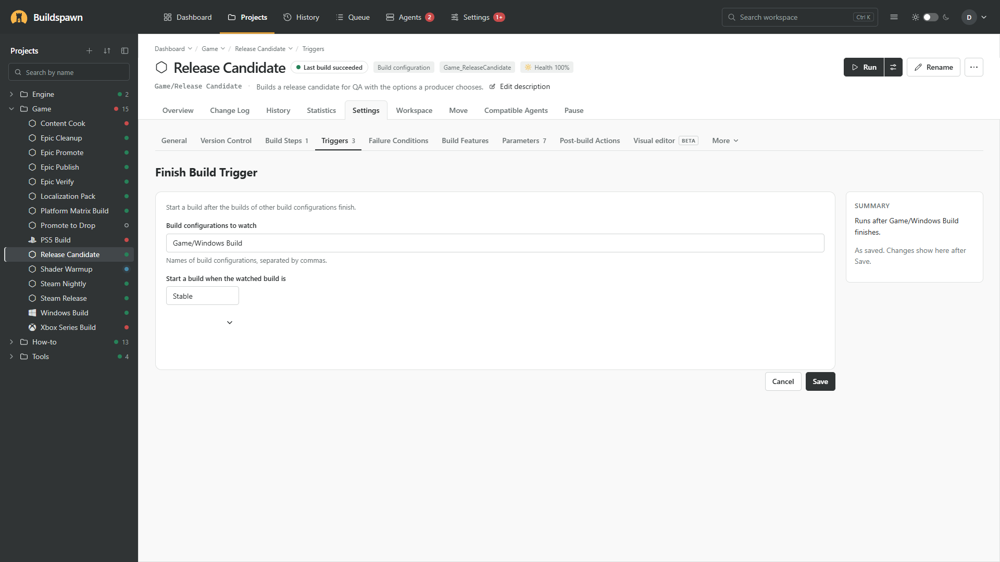

Finish Build trigger
Starts a build when builds of other build configurations finish.
In the trigger picker this is called Build after other build configurations are built.
When to use it
Use it to run tests after a build, or to package after the asset pipeline. If the second build must use the same code as the first, add a snapshot dependency as well: this trigger only starts a build and does not pin the revision.
How to set it up
- Open the build configuration and go to Settings › Triggers.
- Click Add new trigger and click Add next to Finish Build Trigger.
- Type the build configurations in Build configurations to watch, separated by commas.
- Choose the result in Start a build when the watched build is.
- Click Save.

Every field
| Field | What it does | Default | Example |
|---|---|---|---|
| Build configurations to watch | Names of build configurations, separated by commas. A name is checked as you save. Use a path from the project, such as Game/Windows Build. | Empty | Game/Windows Build, Game/Linux Server Build |
| Start a build when the watched build is | Stable (successful only), Unstable or better, Failed or better or Any result. | Stable | Unstable or better |
A worked example
The Unit Tests build watches Game/Linux Server Build with Stable. Each good server build starts a test build.
What you see when it runs
The row says After the watched builds finish, at least SUCCESS and lists the names. The build's cause says it was started by an upstream build, and the log of the watched build says Triggering the new build.
Problems and fixes
| Problem | What to do |
|---|---|
| No such build configuration | Check the name and path. You need permission to see it. |
| The build did not start although the other finished | The result was worse than the level you chose, or the trigger is disabled. |
| The new build used other code | Add a snapshot dependency for the same revision. See Build chains. |